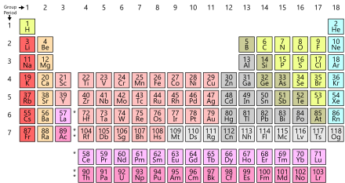

Data Collection
| Name |
Surname |
Favorite Sauce |
Hometown |
| Tabile |
Khume |
Ketchup |
Cape Town |
| Nashville |
James |
Jimmy Sauce |
Cape Town |
| Ismet |
Samsodien |
Mustard |
Cape Town |
| Naasik |
Kamish |
Ketchup |
Cape Town |
| Fatima |
Hendricks |
Ketchup |
Cape Town |
| Liam |
Hendricks |
Mustard |
Cape Town |
| Rasool |
Booley |
Mustard |
Cape Town |
| Taylor |
Davids |
Ketchup |
Cape Town |
| Raasikh |
Booley |
BBQ Sauce |
Cape Town |
| Khanyiso |
Haman |
Chutney |
Cape Town |
| Nathier |
Manuel |
Mustard |
Cape Town |
| Justin |
Creighton |
Mustard |
Cape Town |
| Keanan |
Erasmus |
Ketchup |
Cape Town |
| Ebraheem |
Seale |
Mustard |
Cape Town |
| Marlon |
Ford |
Ketchup |
Cape Town |
| Elizabeth |
Pollard |
BBQ Sauce |
Cape Town |
| Marco |
Paulse |
BBQ Sauce |
Cape Town |
| Justice |
Ganiza |
BBQ Sauce |
Cape Town |
Specific Uses of Tabular Data
Publishing
- Cross-reference (Table Of Contents)
A table of contents usually includes the titles or descriptions of first-level headings
(chapters in longer works), and often includes second-level headings (sections or A-heads)
within the chapters as well, and occasionally even includes third-level headings
(subsections or B-heads) within the sections as well. The depth of detail in tables of contents
depends on the length of the work, with longer works having less. Formal reports
(ten or more pages and being too long to put into a memo or letter) also have a table of contents.
Within an English-language book, the table of contents usually appears after the title page,
copyright notices, and, in technical journals, the abstract; and before any lists of tables or
figures, the foreword, and the preface.
Mathematics
- Arithmetic (Multiplication table)
A multiplication table (sometimes, less formally, a times table) is a mathematical table used to define a multiplication operation for an algebraic system.
The decimal multiplication table was traditionally taught as an essential part of elementary arithmetic around the world, as it lays the foundation for
arithmetic operations with base-ten numbers. Many educators believe it is necessary to memorize the table up to 9 × 9.
- Logic (Truth table)
A truth table is a mathematical table used in logic—specifically in connection with Boolean algebra, boolean functions, and propositional calculus—which
sets out the functional values of logical expressions on each of their functional arguments, that is, for each combination of values taken by their logical
variables (Enderton, 2001). In particular, truth tables can be used to show whether a propositional expression is true for all legitimate input values,
that is, logically valid.
Natural Sciences
- Chemistry (Periodic table)
The periodic table, or periodic table of elements, is a tabular arrangement of the chemical elements, ordered by their atomic number, electron configuration,
and recurring chemical properties, whose structure shows periodic trends. Generally, within one row (period) the elements are metals to the left, and non-metals
to the right, with the elements having similar chemical behaviours placed in the same column. Table rows are commonly called periods and columns are called groups.
Six groups have accepted names as well as assigned numbers: for example, group 17 elements are the halogens; and group 18 are the noble gases. Also displayed are
four simple rectangular areas or blocks associated with the filling of different atomic orbitals.

- Oceanography (tide table)
Tide tables, sometimes called tide charts, are used for tidal prediction and show the daily times and levels of high and low tides, usually for a particular location.
Information Technology
- Software Applications
Modern software applications give users the ability to generate, format, and edit tables and tabular data for a wide variety of uses, for example:
- Word Processing Applications
A word processor is a computer program or device that provides for input, editing, formatting and output of text, often plus other features.
- Spreadsheet Applications
A spreadsheet is an interactive computer application for organization, analysis and storage of data in tabular form.[1][2][3] Spreadsheets are developed as
computerized simulations of paper accounting worksheets.[4] The program operates on data entered in cells of a table. Each cell may contain either numeric
or text data, or the results of formulas that automatically calculate and display a value based on the contents of other cells. A spreadsheet may also refer
to one such electronic document.
- Presentation Software
A presentation program is a software package used to display information in the form of a slide show. It has three major functions: an editor that allows
text to be inserted and formatted, a method for inserting and manipulating graphic images, and a slide-show system to display the content.
- Software Development
Tables have uses in software development for both high-level specification and low-level implementation. Usage in software specification can encompass ad hoc
inclusion of simple decision tables in textual documents through to the use of tabular specification methodologies, examples of which include SCR and Statestep.
Proponents of tabular techniques, among whom David Parnas is prominent, emphasize their understandability, as well as the quality and cost advantages of a format
allowing systematic inspection, while corresponding shortcomings experienced with a graphical notation were cited in motivating the development of at least
two tabular approaches. At a programming level, software may be implemented using constructs generally represented or understood as tabular, whether to store data
(perhaps to memoize earlier results), for example, in arrays or hash tables, or control tables determining the flow of program execution in response to various
events or inputs.

- Databases
Database systems often store data in structures called tables; in which columns are data fields and rows represent data records.